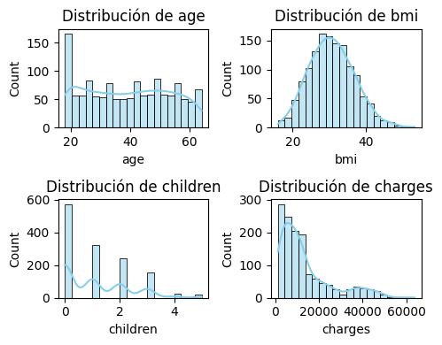
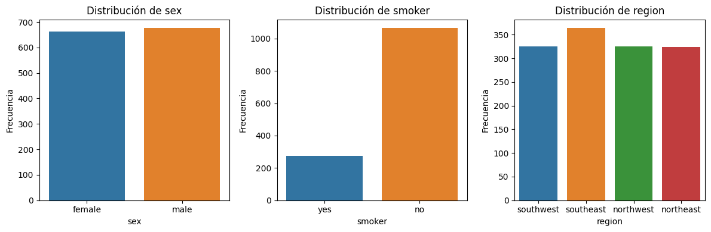
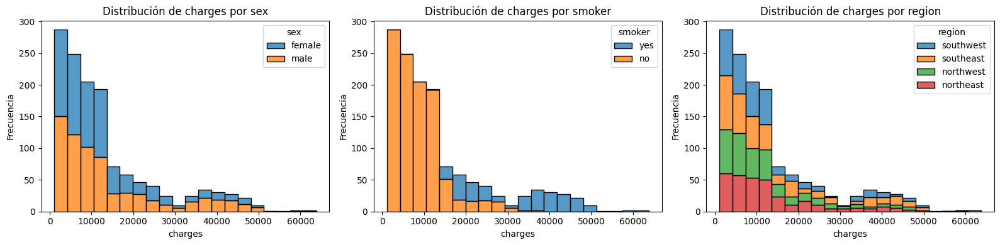
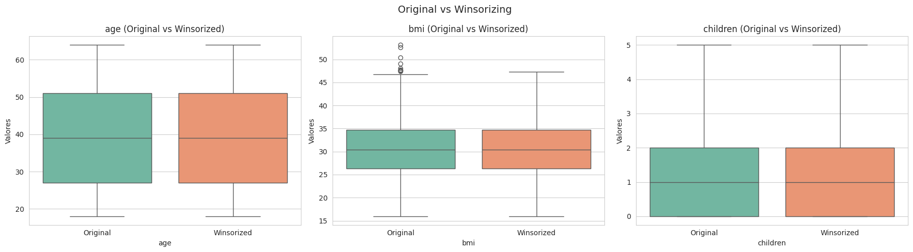
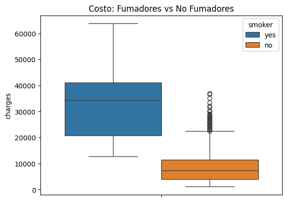
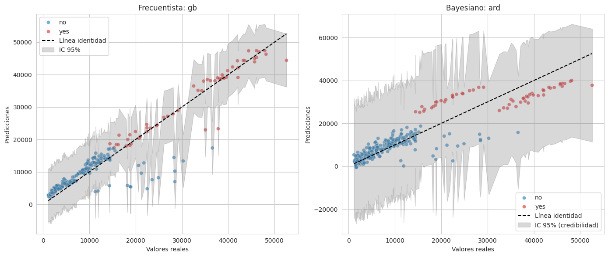
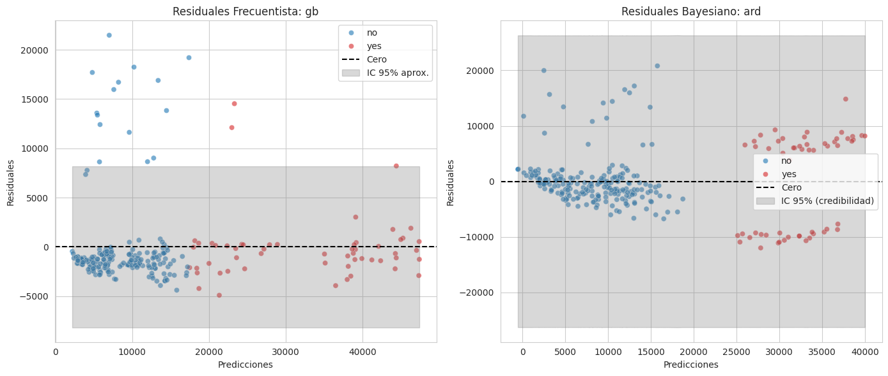
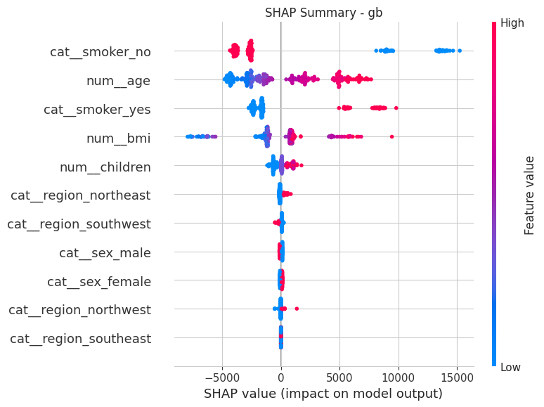
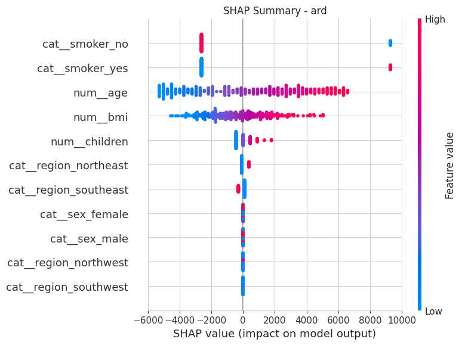

Analisis del dataset de insurance
El dataset de insurance es un conjunto de datos clásico utilizado para modelar costos médicos en función de características demográficas y de estilo de vida. Contiene información sobre asegurados y el monto de sus gastos médicos, lo que lo hace ideal para practicar modelos de regresión.
Puedes probar el modelo insertando nuevos datos Aquí
Cargar librerias
import seaborn as sns
import pandas as pd
import numpy as np
import matplotlib.pyplot as plt
import shap
from sklearn.model_selection import train_test_split, GridSearchCV, KFold
from sklearn.compose import ColumnTransformer
from sklearn.preprocessing import StandardScaler, OneHotEncoder
from sklearn.metrics import mean_absolute_error, r2_score, root_mean_squared_error
from sklearn.linear_model import LinearRegression, Ridge, Lasso, ElasticNet, BayesianRidge, ARDRegression
from sklearn.tree import DecisionTreeRegressor
from sklearn.ensemble import RandomForestRegressor, GradientBoostingRegressor, ExtraTreesRegressor, HistGradientBoostingRegressor
from sklearn.neighbors import KNeighborsRegressor
from skl2onnx import convert_sklearn
from skl2onnx.common.data_types import FloatTensorType
import onnxruntime as ort1 Carga de Datos
df = pd.read_csv("insurance.csv")
df.head(3)| age | sex | bmi | children | smoker | region | charges | |
|---|---|---|---|---|---|---|---|
| 0 | 19 | female | 27.90 | 0 | yes | southwest | 16884.9240 |
| 1 | 18 | male | 33.77 | 1 | no | southeast | 1725.5523 |
| 2 | 28 | male | 33.00 | 3 | no | southeast | 4449.4620 |
age: Edad del asegurado (numérica).
sex: Género del asegurado (male, female).
bmi: Índice de masa corporal (numérica).
children: Número de hijos/dependientes cubiertos por el seguro.
smoker: Si el asegurado fuma (yes, no).
region: Región geográfica en EE. UU. (northeast, northwest, southeast, southwest).
charges: Costos médicos individuales facturados por el seguro (variable objetivo).
2 Análisis Exploratorio de Datos
df.info()<class 'pandas.core.frame.DataFrame'>
RangeIndex: 1338 entries, 0 to 1337
Data columns (total 7 columns):
# Column Non-Null Count Dtype
--- ------ -------------- -----
0 age 1338 non-null int64
1 sex 1338 non-null object
2 bmi 1338 non-null float64
3 children 1338 non-null int64
4 smoker 1338 non-null object
5 region 1338 non-null object
6 charges 1338 non-null float64
dtypes: float64(2), int64(2), object(3)
memory usage: 73.3+ KBSon 1337 observaciones y 7 variables
df.isna().sum()age 0
sex 0
bmi 0
children 0
smoker 0
region 0
charges 0
dtype: int64No hay valores Faltantes
categoricas = ["sex", "smoker", "region"]
numericas = ["age", "bmi", "children", "charges"]Separación de la variables categorias y las númericas
plt.figure(figsize=(5,4))
for i, col in enumerate(numericas, 1):
plt.subplot(2, 2, i)
sns.histplot(df[col], bins=20, kde=True, color='skyblue')
plt.title(f'Distribución de {col}')
plt.tight_layout();
Histograma de las 4 variable numericas
fig, axes = plt.subplots(1, 3, figsize=(12,4))
for ax, col in zip(axes, categoricas):
sns.countplot(x=col, data=df, ax=ax, hue=col)
ax.set_title(f'Distribución de {col}')
ax.set_xlabel(col)
ax.set_ylabel('Frecuencia')
plt.tight_layout();
Distribución de las 3 variables categoricas
fig, axes = plt.subplots(1, 3, figsize=(16,4))
for ax, col in zip(axes, categoricas):
sns.histplot(data=df, x='charges', hue=col, multiple='stack', ax=ax, bins=20)
ax.set_title(f'Distribución de charges por {col}')
ax.set_xlabel('charges')
ax.set_ylabel('Frecuencia')
plt.tight_layout();
Distribución de charges para cada variable categórica
3 Tratamiento de valores outliers
Se utilizo el metodo de Winsorizing
def winsorize_series(s, factor=1.5):
Q1, Q3 = s.quantile([0.25, 0.75])
IQR = Q3 - Q1
lower, upper = Q1 - factor * IQR, Q3 + factor * IQR
return s.clip(lower, upper)
cols = ["age", "bmi", "children"]
df_original = df[cols].copy()
df_winsor = df_original.copy()
for col in cols:
df_winsor[col] = winsorize_series(df_original[col])
fig, axes = plt.subplots(1, len(cols), figsize=(18, 5))
for i, col in enumerate(cols):
df_compare = pd.DataFrame({
"Valores": pd.concat([df_original[col], df_winsor[col]], ignore_index=True),
"Estado": ["Original"] * len(df_original) + ["Winsorized"] * len(df_winsor)
})
sns.boxplot(data=df_compare, x="Estado", y="Valores", hue="Estado",
palette="Set2", dodge=False, ax=axes[i])
axes[i].set_title(f"{col} (Original vs Winsorized)", fontsize=12)
axes[i].set_xlabel(col)
plt.suptitle("Original vs Winsorizing ", fontsize=14)
plt.tight_layout();
El metodo winsorizing reduce los valores extremos y ayuda a reduce la dispersión
sns.boxplot(data=df, y="charges", hue="smoker").set_title("Costo: Fumadores vs No Fumadores");
Existe un desbalance el variable smoker, el cual se debe de tomar encuenta en el modelo
4 Preprocesamiento
numericas = numericas[:-1]
X = df.drop("charges", axis=1)
y = df["charges"]
for col in numericas:
X[col] = winsorize_series(X[col])
preproc = ColumnTransformer([
("num", StandardScaler(), numericas),
("cat", OneHotEncoder(handle_unknown="ignore", sparse_output=False), categoricas)
])
X_train, X_test, y_train, y_test = train_test_split(
X, y, test_size=0.2, random_state=42, stratify=df["smoker"])
preproc.fit(X_train)
X_train_processed = preproc.transform(X_train)
X_test_processed = preproc.transform(X_test)Se separo las columnas de la variable objetivo
Se redujeron los valores outliers.
Se reescalo la variables numericas.
Se transformaron las variables categorias.
Se dividio el dataset en 80% train y 20% test, se tomo encuenta en desbalance de la columna smoker, para tener una mejor distribución de los datos.
5 Selección de los modelos
modelos = {
"linreg": LinearRegression(),
"ridge": Ridge(random_state=42),
"lasso": Lasso(random_state=42),
"enet": ElasticNet(random_state=42),
"dt": DecisionTreeRegressor(random_state=42),
"rf": RandomForestRegressor(random_state=42, n_jobs=-1),
"gb": GradientBoostingRegressor(random_state=42),
"et": ExtraTreesRegressor(random_state=42, n_jobs=-1),
"hgb": HistGradientBoostingRegressor(random_state=42),
"knn": KNeighborsRegressor(),
"bayes_ridge": BayesianRidge(),
"ard": ARDRegression()
}
resultados_default = {}
for name, modelo in modelos.items():
modelo.fit(X_train_processed, y_train)
y_pred = modelo.predict(X_test_processed)
resultados_default[name] = {
"RMSE": root_mean_squared_error(y_test, y_pred),
"MAE": mean_absolute_error(y_test, y_pred),
"R2": r2_score(y_test, y_pred),
"MAPE": np.mean(np.abs((y_test - y_pred) / y_test)) * 100
}
df_resultados = pd.DataFrame(resultados_default).round(3).transpose().sort_values("RMSE")
frecuentistas = [n for n in df_resultados.index if n not in ["bayes_ridge", "ard"]]
bayesianos = ["bayes_ridge", "ard"]
print("\n--- Ranking Frecuentistas ---")
print(df_resultados.loc[frecuentistas])--- Ranking Frecuentistas ---
RMSE MAE R2 MAPE
gb 4275.516 2401.829 0.876 28.568
hgb 4719.726 2856.109 0.849 37.770
rf 4758.837 2811.406 0.846 37.836
et 5150.095 2746.673 0.820 40.756
lasso 5578.435 3873.742 0.789 38.435
ridge 5578.495 3877.731 0.789 38.492
linreg 5578.582 3873.931 0.789 38.438
knn 5964.791 3701.869 0.759 40.099
dt 6022.786 2790.782 0.754 36.124
enet 8278.938 6163.192 0.535 90.716Se entreno con varios modelos, tanto modelos frecuentistas como bayesianos y se hizo la comparacion con la metrica RMSE
print("\n--- Top 3 Modelos Frecuentistas ---")
print(df_resultados.loc[frecuentistas][:3].sort_values("RMSE"))
print("\n---------------")
print("\n--- Modelos Bayesianos ---")
print(df_resultados.loc[bayesianos].sort_values("RMSE"))--- Top 3 Modelos Frecuentistas ---
RMSE MAE R2 MAPE
gb 4275.516 2401.829 0.876 28.568
hgb 4719.726 2856.109 0.849 37.770
rf 4758.837 2811.406 0.846 37.836
---------------
--- Modelos Bayesianos ---
RMSE MAE R2 MAPE
ard 5575.852 3865.231 0.789 38.549
bayes_ridge 5578.494 3877.773 0.789 38.493Los modelos frecuentistas selecionados por tener menor RMSE son:
GradientBoostingRegressor
HistGradientBoostingRegressor
RandomForestRegressor
Los modelos bayesianos selecionados por tener menor RMSE son:
ARDRegression
BayesianRidge
6 Tuning los top 3 modelos frecuencistas
param_grid = {
"ridge": {"alpha": [0.1, 1.0, 10.0]},
"lasso": {"alpha": [0.001, 0.01, 0.1, 1.0]},
"enet": {"alpha": [0.001, 0.01, 0.1], "l1_ratio": [0.2, 0.5, 0.8]},
"dt": {"max_depth": [None, 5, 10, 20]},
"rf": {"n_estimators": [200, 500], "max_depth": [None, 10, 20]},
"gb": {"n_estimators": [100, 200], "learning_rate": [0.05, 0.1]},
"et": {"n_estimators": [200, 500], "max_depth": [None, 10, 20]},
"hgb": {"max_iter": [200, 500], "learning_rate": [0.05, 0.1]},
"knn": {"n_neighbors": [5, 10, 15]},
"bayes_ridge": {"alpha_1": [1e-6, 1e-4], "alpha_2": [1e-6, 1e-4]},
"ard": {"alpha_1": [1e-6, 1e-4], "alpha_2": [1e-6, 1e-4]}
}
best_models, best_params = {}, {}
cv = KFold(n_splits=5, shuffle=True, random_state=42)
top3 = df_resultados.index[:3].tolist()
for name in top3:
if name not in param_grid:
best_models[name] = modelos[name].fit(X_train_processed, y_train)
best_params[name] = {}
else:
grid = GridSearchCV(modelos[name], param_grid[name], cv=cv,
scoring="neg_root_mean_squared_error", n_jobs=-1)
grid.fit(X_train_processed, y_train)
best_models[name] = grid.best_estimator_
best_params[name] = grid.best_params_
ajustados = {}
for name, modelo in modelos.items():
if name in best_models:
ajustados[name] = best_models[name]
else:
modelo.fit(X_train_processed, y_train)
ajustados[name] = modelo
scores_final = {
name: root_mean_squared_error(y_test, m.predict(X_test_processed))
for name, m in ajustados.items()
}
best_frec_name = min(frecuentistas, key=lambda n: scores_final[n])
best_bayes_name = min(bayesianos, key=lambda n: scores_final[n])
best_frec_model = ajustados[best_frec_name]
best_bayes_model = ajustados[best_bayes_name]Se realizo un tuning de los top 3 modelos frecuentistas y bayesianos, y se selecciono el mejor de cada enfoque, luego se evaluo en el data test.
y_pred_frec = best_frec_model.predict(X_test_processed)
y_pred_bayes, _ = best_bayes_model.predict(X_test_processed, return_std=True)
result_frec = {
"Modelo": f"Frecuentista {best_frec_name}",
"RMSE": root_mean_squared_error(y_test, y_pred_frec),
"MAE": mean_absolute_error(y_test, y_pred_frec),
"R2": r2_score(y_test, y_pred_frec),
"MAPE": np.mean(np.abs((y_test - y_pred_frec) / y_test)) * 100
}
result_bayes = {
"Modelo": f"Bayesiano {best_bayes_name}",
"RMSE": root_mean_squared_error(y_test, y_pred_bayes),
"MAE": mean_absolute_error(y_test, y_pred_bayes),
"R2": r2_score(y_test, y_pred_bayes),
"MAPE": np.mean(np.abs((y_test - y_pred_bayes) / y_test)) * 100
}
df_resultados = pd.DataFrame([result_frec, result_bayes])
df_resultados.round(3)| Modelo | RMSE | MAE | R2 | MAPE | |
|---|---|---|---|---|---|
| 0 | Frecuentista gb | 4183.896 | 2410.873 | 0.881 | 31.138 |
| 1 | Bayesiano ard | 5575.852 | 3865.231 | 0.789 | 38.549 |
La mejores metricas de cada enfoque en el data test
def obtener_intervalos(model, X, y_true=None, bayesiano=False):
if bayesiano:
y_mean, y_std = model.predict(X, return_std=True)
return y_mean, y_mean - 1.96*y_std, y_mean + 1.96*y_std
y_pred = model.predict(X)
if hasattr(model, "estimators_") and hasattr(model, "n_estimators") and not model.__class__.__name__.startswith("GradientBoosting"):
estimators = model.estimators_
if isinstance(estimators, np.ndarray):
estimators = estimators.ravel().tolist()
member_preds = np.stack([est.predict(X) for est in estimators], axis=1)
std_preds = member_preds.std(axis=1)
return y_pred, y_pred - 1.96*std_preds, y_pred + 1.96*std_preds
resid_std = np.std(y_true - y_pred)
return y_pred, y_pred - 1.96*resid_std, y_pred + 1.96*resid_std
y_center_frec, ci_lower_frec, ci_upper_frec = obtener_intervalos(best_frec_model, X_test_processed, y_test, bayesiano=False)
y_center_bayes, ci_lower_bayes, ci_upper_bayes = obtener_intervalos(best_bayes_model, X_test_processed, bayesiano=True)Se crean los intervalos de confianza/credibilidad de cada enfoque
7 Gráficos
Valores reales vs los predichos de cada enfoque, con su respectivo intervalo de confianza/credibilidad
sns.set_style("whitegrid")
plt.figure(figsize=(14,6))
# Frecuentista
plt.subplot(1,2,1)
sns.scatterplot(x=y_test, y=y_center_frec, hue=X_test["smoker"],
palette={"yes":"tab:red","no":"tab:blue"}, alpha=0.6, s=35)
plt.plot([y_test.min(), y_test.max()], [y_test.min(), y_test.max()],
color="black", linestyle="--", label="Línea identidad")
order_f = np.argsort(y_test.values)
plt.fill_between(y_test.values[order_f], ci_lower_frec[order_f], ci_upper_frec[order_f],
color="gray", alpha=0.3, label="IC 95%")
plt.title(f"Frecuentista: {best_frec_name}")
plt.xlabel("Valores reales")
plt.ylabel("Predicciones")
plt.legend()
# Bayesiano
plt.subplot(1,2,2)
sns.scatterplot(x=y_test, y=y_center_bayes, hue=X_test["smoker"],
palette={"yes":"tab:red","no":"tab:blue"}, alpha=0.6, s=35)
plt.plot([y_test.min(), y_test.max()], [y_test.min(), y_test.max()],
color="black", linestyle="--", label="Línea identidad")
order_b = np.argsort(y_test.values)
plt.fill_between(y_test.values[order_b], ci_lower_bayes[order_b], ci_upper_bayes[order_b],
color="gray", alpha=0.3, label="IC 95% (credibilidad)")
plt.title(f"Bayesiano: {best_bayes_name}")
plt.xlabel("Valores reales")
plt.ylabel("Predicciones")
plt.legend()
plt.tight_layout();
Se observa que el modelo frecuentista predice mejor, ademas de ver que los no fumadores causan mayor problema para la prediccion por los valores outliers que tienen
resid_frec = y_test.values - y_center_frec
resid_bayes = y_test.values - y_center_bayes
band_frec = (ci_upper_frec - y_center_frec)
band_bayes = (ci_upper_bayes - y_center_bayes)
plt.figure(figsize=(14,6))
plt.subplot(1,2,1)
sns.scatterplot(x=y_center_frec, y=resid_frec, hue=X_test["smoker"],
palette={"yes":"tab:red","no":"tab:blue"}, alpha=0.6, s=35)
plt.axhline(0, color="black", linestyle="--", label="Cero")
order_rf = np.argsort(y_center_frec)
plt.fill_between(y_center_frec[order_rf], -band_frec[order_rf], band_frec[order_rf],
color="gray", alpha=0.3, label="IC 95% aprox.")
plt.title(f"Residuales Frecuentista: {best_frec_name}")
plt.xlabel("Predicciones")
plt.ylabel("Residuales")
plt.legend()
plt.subplot(1,2,2)
sns.scatterplot(x=y_center_bayes, y=resid_bayes, hue=X_test["smoker"],
palette={"yes":"tab:red","no":"tab:blue"}, alpha=0.6, s=35)
plt.axhline(0, color="black", linestyle="--", label="Cero")
order_rb = np.argsort(y_center_bayes)
plt.fill_between(y_center_bayes[order_rb], -band_bayes[order_rb], band_bayes[order_rb],
color="gray", alpha=0.3, label="IC 95% (credibilidad)")
plt.title(f"Residuales Bayesiano: {best_bayes_name}")
plt.xlabel("Predicciones")
plt.ylabel("Residuales")
plt.legend()
plt.tight_layout();
Se observa lo mismo con los gráficos de los residuos
8 SHAP
Varibles Explicativas para el modelo Frecuentista
feature_names = preproc.get_feature_names_out().tolist()
explainer_frec = shap.Explainer(best_frec_model, X_train_processed)
shap_values_frec = explainer_frec(X_test_processed)
plt.title(f"SHAP Summary - {best_frec_name}")
shap.summary_plot(shap_values_frec, X_test_processed, feature_names=feature_names)
El SHAP de gb muestra que la varible no fumadores tiene un gran impacto, seguido de los fumadores en la variable charges
Varibles Explicativas para el modelo Bayesiano
explainer_bayes = shap.Explainer(best_bayes_model, X_train_processed)
shap_values_bayes = explainer_bayes(X_test_processed)
plt.title(f"SHAP Summary - {best_bayes_name}")
shap.summary_plot(shap_values_bayes, X_test_processed, feature_names=feature_names)
9 Guardar modelo
Se guarda el modelo el formato onnx para ser ejecutado en la web o móvil
n_features = X_train_processed.shape[1]
initial_type = [('float_input', FloatTensorType([None, n_features]))]
onnx_frec = convert_sklearn(best_frec_model,
target_opset=13,
initial_types=initial_type)
with open("best_frec_model.onnx", "wb") as f:
f.write(onnx_frec.SerializeToString())
onnx_bayes = convert_sklearn(best_bayes_model,
target_opset=13,
initial_types=initial_type)
with open("best_bayes_model.onnx", "wb") as f:
f.write(onnx_bayes.SerializeToString())Verificar si el modelo se guardo correctamente a traves de la introducción de un dato
sess_frec = ort.InferenceSession("best_frec_model.onnx")
sess_bayes = ort.InferenceSession("best_bayes_model.onnx")
sample_input = X_test_processed[0:1].astype(np.float32)
input_name_frec = sess_frec.get_inputs()[0].name
input_name_bayes = sess_bayes.get_inputs()[0].name
pred_frec = sess_frec.run(None, {input_name_frec: sample_input})[0]
pred_bayes = sess_bayes.run(None, {input_name_bayes: sample_input})[0]
print("Predicción Frecuentista:", pred_frec)
print("Predicción Bayesiana:", pred_bayes)
print("Valor real de test:", y_test.iloc[0])Predicción Frecuentista: [[8627.369]]
Predicción Bayesiana: [[7778.1484]]
Valor real de test: 6799.458Valores de las columnas X’s
print("Valor real de test:\n", X_test.iloc[0])Valor real de test:
age 31
sex male
bmi 28.5
children 5
smoker no
region northeast
Name: 71, dtype: object